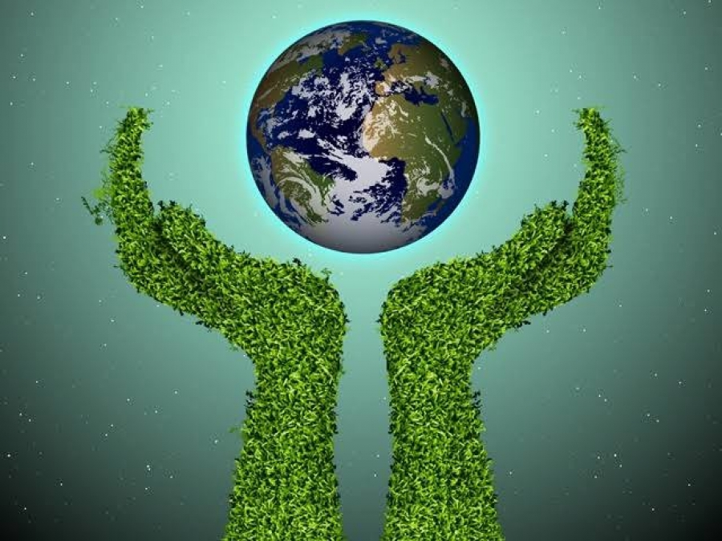
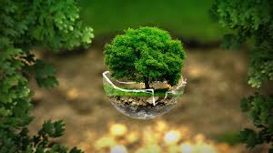
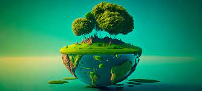

A historia sobre o meio ambiente

- Notícia
- poluição
- Natureza
- preservação
O Meio ambiente é o conjunto de elementos biológicos (flora e fauna), físicos e químicos organizados em diferentes ecossistemas naturais e sociais em que se insere o Homem num processo de interação que cria condições para mantêm a vida no planeta Preservar o meio ambiente é preservar a vida! Preservar o meio ambiente é fundamental, afinal,é nele onde estão os recursos naturais é necessários para a nossa sobrevivência, como água, alimentos e matérias-primas Sem esses recursos, todas as formas de vida do planeta poderão acabar.
O meio ambiente é um processo químico que criam condições e mantêm a vidado planeta, Ele é importante porque é dele que os recursos essenciais para manutenção da vida e do funcionamento da sociedade, especialmente em tratando do desenvolvimento da economia do mundo são esses recursos o ar, a água, os alimento da materia-prima utilizadas para a fabricação de outros alimentos, vestuário e itens básicos utilizados no cotidiano ou seja, é a natureza com todos os seres vivos que nela habitam e interagem
A preservação do meio ambiente faz parte dos temas transversais presentes nos Parâmetros Curriculares Nacionais (PCN's). O seu objetivo é incitar nos estudantes a importância de preservar o meio ambiente e os problemas causados pela intervenção humana na natureza Assim, o conceito de meio ambiente apresenta diferentes conotações, podendo ser analisado sob diversos prismas, como: aspectos naturais, como fauna e flora (meio ambiente natural); espaço urbano (meio ambiente artificial); locais onde as pessoas exercem suas atividades (meio ambiente de trabalho); patrimônio cultural nacional (meio ambiente cultural); e patrimônio genético. Aqui nos detemos ao meio ambiente físico ou natural, constituído pelos recursos naturais, como água, solo, ar, fauna e flora..
Como previsto na Constituição Federal, em seu artigo 225, é dever do Poder Público e da coletividade defender e preservar o meio ambiente para as gerações futuras. Assim, além de ser essencial a criação de políticas de preservação do meio ambiente, a população em geral deve agir cobrando e fiscalizando as ações dos governos, e também atuando no dia a dia por meio de ações simples e que contribuem para essa preservação
No ano de 1972, realizou-se em Estocolmo, na Suécia, a Conferência das Nações Unidas sobre o Meio Ambiente Humano com a participação de representantes de 115 países e de diversas organizações de diferentes segmentos.Durante essa conferência, foi estabelecido o dia 5 de junho como o Dia Mundial do Meio Ambiente.
Essa data foi criada mediante a necessidade de ações relacionadas à preservação do meio ambiente, afetado constantemente pelas ações antrópicas. Seu objetivo é sensibilizar a população a respeito da importância de preservação do meio ambiente, além de encorajar a realização de ações de preservação. A cada ano, um tema diferente e relacionado às causas ambientais é trabalhado por meio de diversas ações.
  